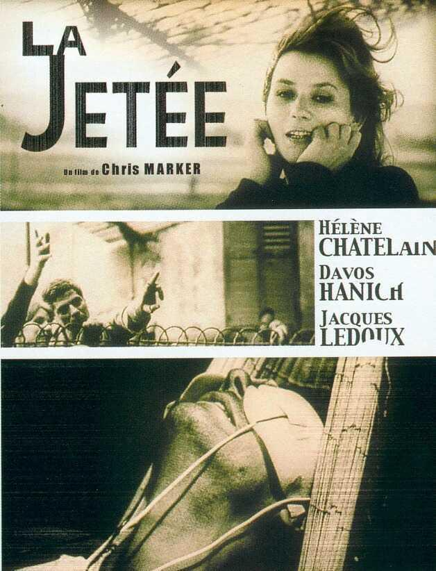
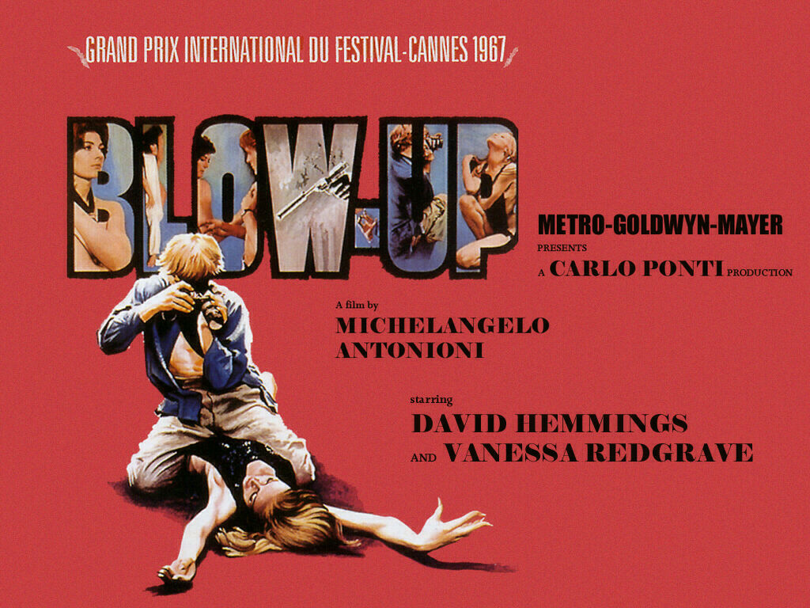
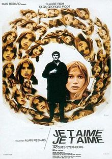
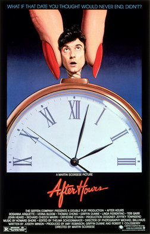
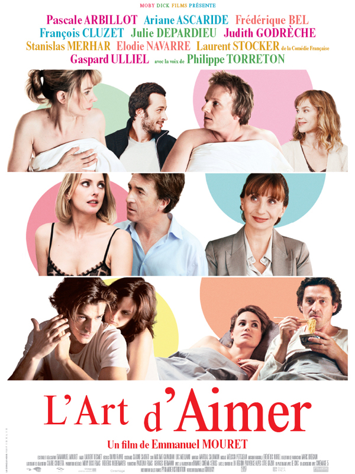

|  |
La JetéeSynopsis "La Jetée ("The Jetty," here referring to an outdoor viewing pier at an airport), is a 1962 French science fiction featurette by Chris Marker. Constructed almost entirely from still photos, it tells the story of a post-nuclear war experiment in time travel. It is 28 minutes long and shot in black and white. It won the Prix Jean Vigo for short film. The 1995 science fiction film 12 Monkeys was inspired by and borrows several concepts directly from La Jetée." |
|  |
Blow UpSynopsis "Blowup, or Blow-Up, is a 1966 British-Italian film directed by Michelangelo Antonioni about a fashion photographer, played by David Hemmings, who believes he has unwittingly captured a murder on film. It was Antonioni's first entirely English-language film. The plot was inspired by Julio Cortázar's short story, "Las babas del diablo" or "The Devil's Drool" (1959), translated also as "Blow Up" in Blow-up and Other Stories, and by the life of Swinging London photographer David Bailey. The film was scored by jazz pianist Herbie Hancock. The music is diegetic, as Hancock noted: "It's only there when someone turns on the radio or puts on a record." |
|  |
Je t'aime, je t'aimeSynopsis "Je t'aime, je t'aime ("I Love You, I Love You") is a 1968 French science fiction film directed by Alain Resnais from a screenplay by Jacques Sternberg. The plot centres on Claude Ridder (Claude Rich) who is asked to participate in a mysterious experiment in time travel when he leaves hospital after a failed suicide attempt. The experiment, intended to return him after one minute of observing the past, instead causes him to experience his past in a disjointed fashion. His fate is left ambiguous". |
|  |
After HoursSynopsis "After Hours is a 1985 American black comedy film directed by Martin Scorsese, written by Joseph Minion, and starring Griffin Dunne with an ensemble cast. The film follows Paul Hackett, portrayed by Dunne, as he experiences a series of misadventures while making his way home from New York City's SoHo district during the night". |
|  |
L'art d'aimerSynopsis "The Art of Love (French: "L'Art d'aimer") is a 2011 French comedy film directed and written by Emmanuel Mouret. It was inspired by the Ovide's novels. The ArtS of Love is composed of several chapters, which follows several Parisian couples.". |